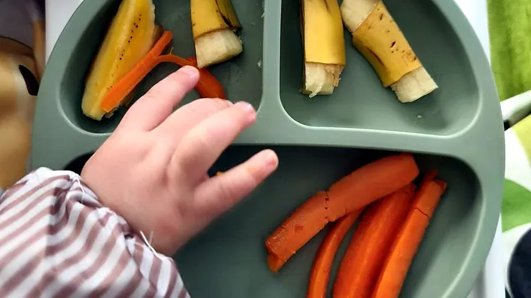
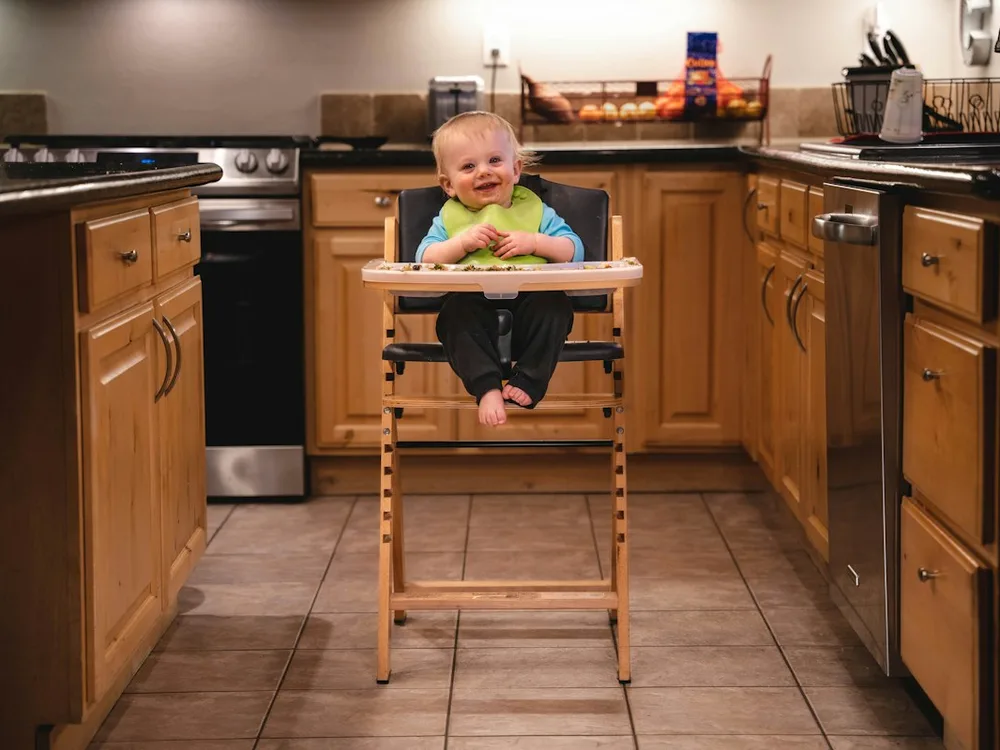
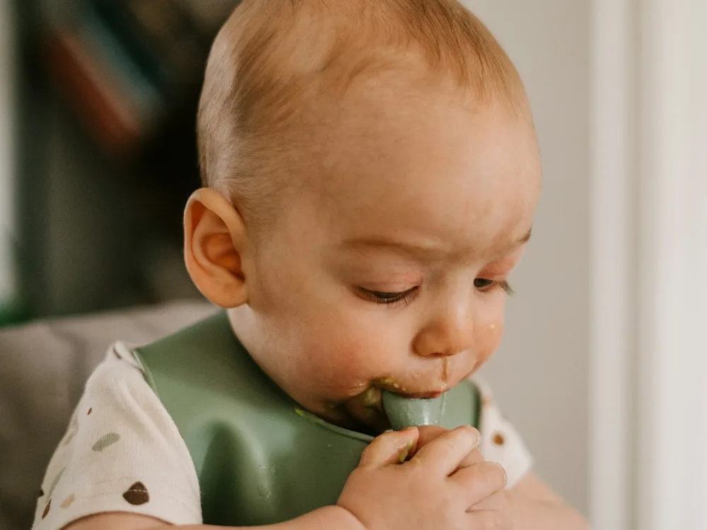

BLW: cómo empezar con seguridad y sin miedo

Se acercan los 6 meses y, con ellos, las dudas: ¿empezamos con purés o con trozos?, ¿y si se atraganta?, ¿qué le doy primero? El BLW, o alimentación autorregulada por el bebé, es una forma de empezar con los sólidos en la que tu peque come trozos de comida con sus propias manos desde el principio. Si se hace bien, es seguro y una oportunidad preciosa para que crezca con una buena relación con la comida. Te cuento cómo empezar paso a paso.
Qué es el BLW (y el método mixto)
BLW son las siglas en inglés de baby-led weaning. En lugar de dar triturados con cuchara, se ofrecen alimentos enteros, cocinados con la textura adecuada y cortados de forma segura, para que el bebé los coja, los explore y decida cuánto come. La leche, materna o de fórmula, sigue siendo su alimento principal durante todo el primer año.
No es todo o nada. Muchas familias combinan trozos y triturados, lo que se conoce como método mixto, y también es una opción válida. Lo importante es avanzar en texturas y no quedarse solo en los purés finos durante meses, porque el bebé necesita practicar masticar.
Cuándo empezar: las señales
Las sociedades científicas europeas recomiendan empezar con la alimentación complementaria alrededor de los 6 meses, y nunca antes de los 4 meses1. Más que la fecha exacta, importa que tu bebé esté preparado. Estas son las señales:
- Se mantiene sentado con poca ayuda y sujeta bien la cabeza.
- Muestra interés por la comida: mira, abre la boca, intenta coger lo que comes.
- Es capaz de coger objetos y llevárselos a la boca.
- Ha perdido el reflejo de extrusión, es decir, ya no saca automáticamente con la lengua todo lo que le entra en la boca.
Si tu bebé nació prematuro o tiene alguna dificultad en el desarrollo, comenta con tu pediatra cuándo es su momento.
Arcada no es atragantamiento
Es el miedo número uno, y es normal. Lo primero que hay que saber es que la arcada y el atragantamiento son cosas distintas:
| Arcada | Atragantamiento | |
|---|---|---|
| Qué es | Un reflejo de protección que empuja la comida hacia delante. | La comida bloquea la vía respiratoria. |
| Cómo se ve | Tose, hace ruido, saca la lengua, puede ponerse rojo. | Silencioso o con un sonido agudo, no puede toser ni llorar, se pone pálido o azulado. |
| Qué hacer | Mantener la calma y dejar que lo resuelva solo. | Actuar de inmediato con las maniobras de desobstrucción y llamar al 112. |
Las arcadas son muy frecuentes al principio y forman parte del aprendizaje. ¿Y el atragantamiento? En un ensayo clínico con 206 bebés, los que siguieron un BLW con pautas de seguridad no se atragantaron más que los que empezaron con cuchara2. Otro estudio con más de 1.100 familias tampoco encontró más atragantamientos con el BLW3. Eso sí, en ambos casos llamaba la atención la cantidad de familias que ofrecían alimentos de riesgo. Por eso la clave está en cómo se ofrecen.
Mi recomendación: antes de empezar, aprende las maniobras de desobstrucción de la vía aérea en lactantes. Muchos centros de salud y asociaciones organizan cursos. Te dará muchísima tranquilidad, empieces con BLW o con cuchara.
Cómo ofrecer los alimentos con seguridad

- Postura: siempre sentado y erguido, en una trona o en tu regazo, nunca tumbado, en el carrito o mientras gatea.
- Supervisión: un adulto siempre presente y atento, sin pantallas ni prisas.
- Textura: el alimento debe poder aplastarse fácilmente entre tus dedos índice y pulgar, o con la lengua contra el paladar. Por ejemplo, brócoli o zanahoria bien cocidos, plátano maduro o aguacate.
- Forma: al principio, en tiras del tamaño de un dedo adulto, para que pueda cogerlas con el puño y le sobresalga un trozo. Cuando aparezca la pinza, hacia los 9 meses, ya puede coger trozos más pequeños.
- Él decide: no le metas la comida en la boca. Que sea el bebé quien la lleve a su ritmo.
Qué ofrecer primero

No hay un orden obligatorio de alimentos. Lo que sí es importante es pensar en el hierro, porque a partir de los 6 meses sus reservas empiezan a bajar. En un ensayo clínico, los bebés que siguieron un BLW en el que se ofrecía un alimento rico en hierro en cada comida tuvieron el mismo nivel de hierro que los que empezaron con cuchara4.
Algunas ideas para los primeros días:
- Ricos en hierro: tiras de carne tierna o pollo deshilachado, huevo bien cuajado en tiras de tortilla, legumbres aplastadas o en hummus untado en una tira de pan.
- Verduras: brócoli, coliflor, zanahoria, calabacín o boniato, al vapor o al horno y bien tiernos.
- Frutas: plátano, aguacate, pera madura o mango, en tiras.
- Cereales: tiras de pan, tortitas de avena caseras o pasta grande bien cocida.
Los alimentos que más alergias dan, como el huevo, el pescado o los frutos secos en crema, se pueden introducir desde el principio, de uno en uno. Retrasarlos no previene las alergias1. En el caso del cacahuete, ofrecerlo de forma temprana redujo mucho la alergia en bebés de riesgo5, pero siempre en crema, nunca entero. Si tu bebé tiene dermatitis grave o ya tiene alguna alergia, consulta antes con su pediatra.
Alimentos que conviene esperar
- Sal, azúcar y ultraprocesados: al menos hasta el año, y mejor cuanto más tarde.
- Miel: no antes del año, por el riesgo de botulismo.
- Leche de vaca como bebida: a partir del año. En pequeñas cantidades, dentro de los platos, sí se puede usar antes.
- Pescados grandes como el pez espada o el atún rojo, por su contenido en mercurio.
- Alimentos con riesgo de atragantamiento: frutos secos enteros, uvas o tomates cherry enteros, salchichas en rodajas, palomitas o manzana cruda dura. Los frutos secos, molidos o en crema; las uvas y los cherry, en cuartos a lo largo.
Más allá de la comida: su relación con ella
La alimentación complementaria no va solo de nutrientes. Es el momento en que tu peque empieza a construir su relación con la comida. Algunas ideas que trabajo mucho con las familias:
- La división de responsabilidades: los adultos deciden qué, cuándo y dónde se come; el bebé decide si come y cuánto. Así respetamos sus señales de hambre y saciedad.
- Sin presiones ni premios: ni el «una cucharada más», ni el postre como recompensa.
- Paciencia con lo nuevo: a veces hace falta ofrecer un alimento muchas veces antes de que lo acepte. Y hacia los 2 años suele aparecer la neofobia, el rechazo a probar alimentos nuevos, que es una etapa normal.
- Comer en familia: los bebés aprenden mirando. Que te vea comer variado y disfrutar es una de las mejores lecciones.
Y sobre el peso, tranquilidad: en un ensayo clínico, los bebés que siguieron un BLW crecieron igual que los que empezaron con cuchara6.
Cómo te ayudo en consulta en Jaén
Como nutricionista en Jaén, acompaño a muchas familias en esta etapa. En una sesión de alimentación complementaria, presencial en el centro de Jaén u online, vemos todo lo práctico:
- Cuándo empezar con tu peque y cómo saber si está preparado.
- BLW, triturados o método mixto: lo que mejor encaje con vuestra familia.
- Cómo cortar y preparar cada alimento según la edad, y cómo introducir los alérgenos.
- Cómo cuidar su relación con la comida y qué esperar en las siguientes etapas.
Te llevas además una tabla de introducción de alimentos y guías para tenerlo todo a mano en la cocina. Puedes ver todos los detalles en alimentación complementaria y BLW.
Referencias
- Fewtrell M, Bronsky J, Campoy C, et al. Complementary feeding: a position paper by the European Society for Paediatric Gastroenterology, Hepatology, and Nutrition (ESPGHAN) Committee on Nutrition. J Pediatr Gastroenterol Nutr. 2017;64(1):119-132. doi:10.1097/MPG.0000000000001454
- Fangupo LJ, Heath AM, Williams SM, et al. A baby-led approach to eating solids and risk of choking. Pediatrics. 2016;138(4):e20160772. doi:10.1542/peds.2016-0772
- Brown A. No difference in self-reported frequency of choking between infants introduced to solid foods using a baby-led weaning or traditional spoon-feeding approach. J Hum Nutr Diet. 2018;31(4):496-504. doi:10.1111/jhn.12528
- Daniels L, Taylor RW, Williams SM, et al. Impact of a modified version of baby-led weaning on iron intake and status: a randomised controlled trial. BMJ Open. 2018;8(6):e019036. doi:10.1136/bmjopen-2017-019036
- Du Toit G, Roberts G, Sayre PH, et al. Randomized trial of peanut consumption in infants at risk for peanut allergy. N Engl J Med. 2015;372(9):803-813. doi:10.1056/NEJMoa1414850
- Taylor RW, Williams SM, Fangupo LJ, et al. Effect of a baby-led approach to complementary feeding on infant growth and overweight: a randomized clinical trial. JAMA Pediatr. 2017;171(9):838-846. doi:10.1001/jamapediatrics.2017.1284
Este artículo es divulgativo y no sustituye la valoración individual de tu pediatra ni de un profesional sanitario.